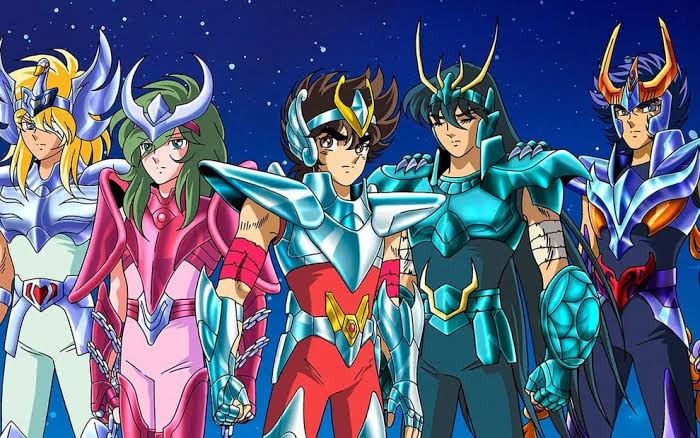
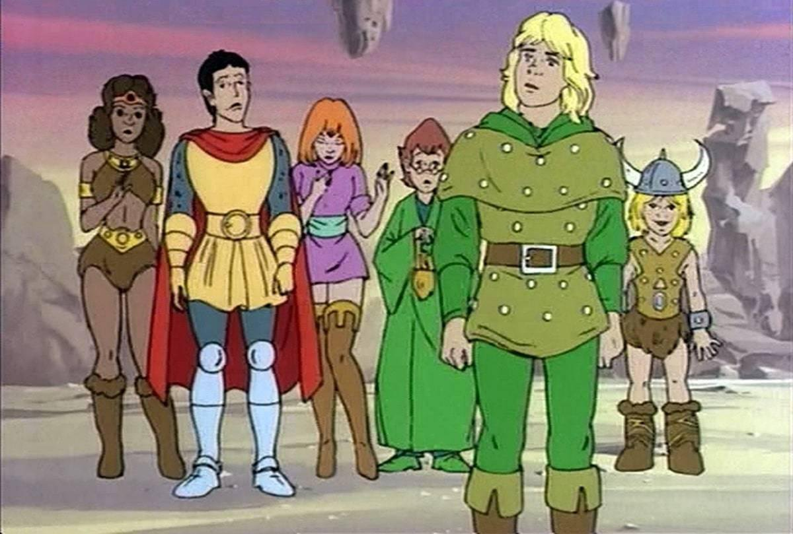
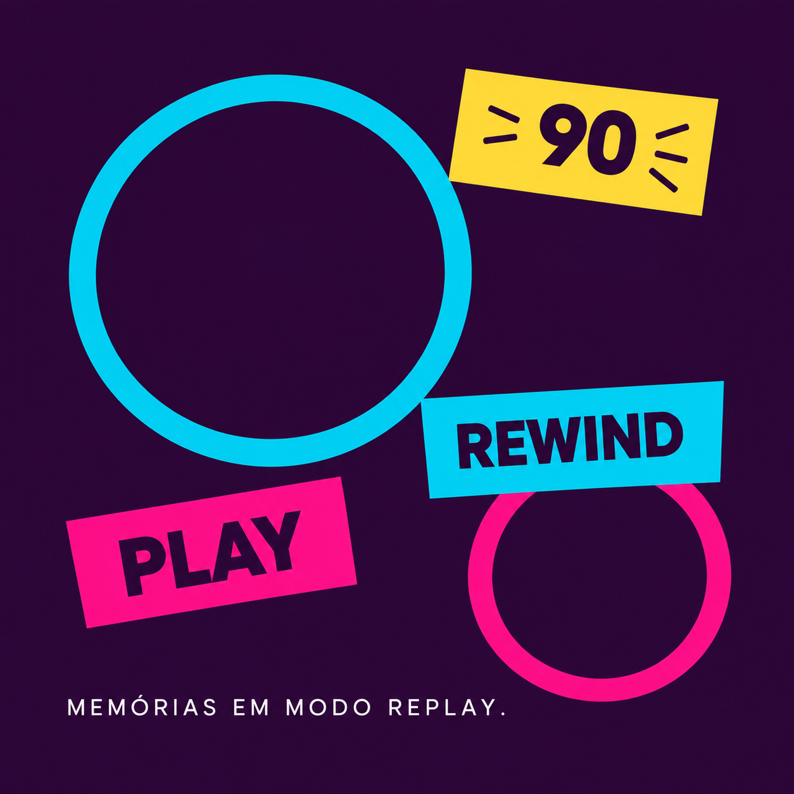
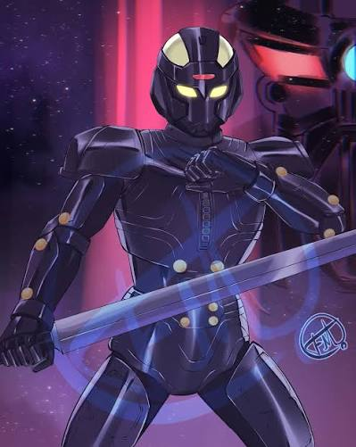
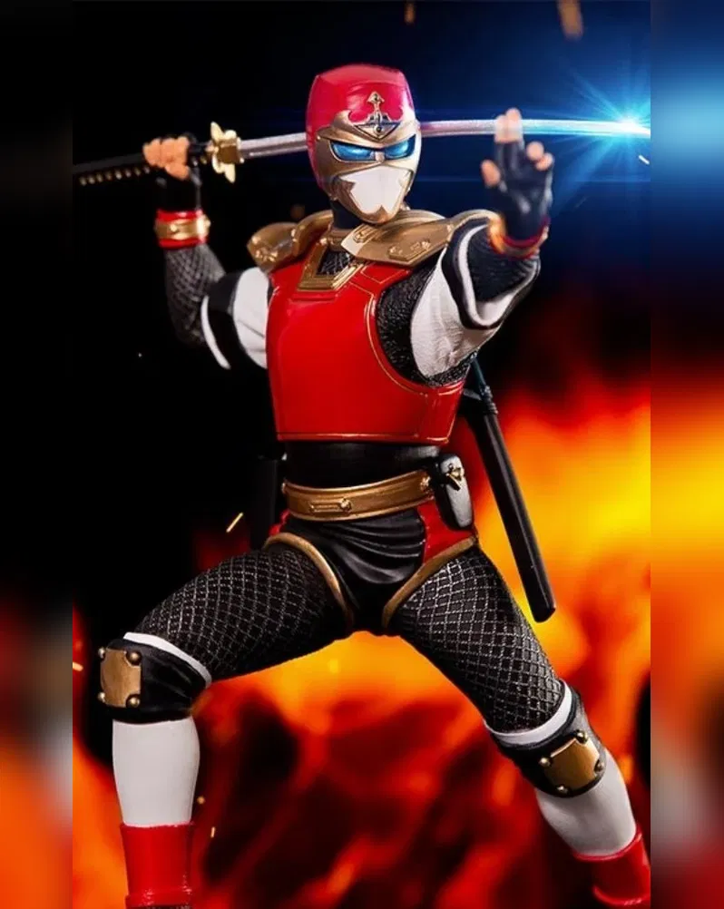
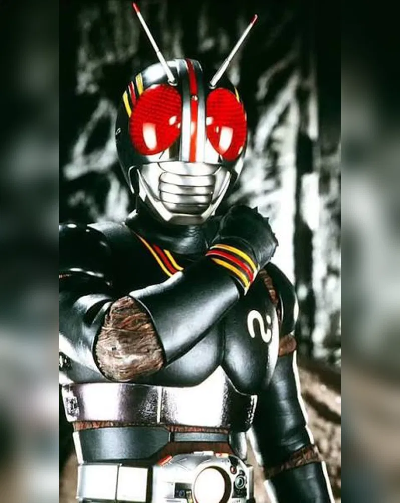

-

1986
CAVALEIROS DO ZODÍACO
-

1983
CAVERNA DO DRAGÃO
80 • 90 • 2000
HISTÓRIAS QUE ATRAVESSARAM GERAÇÕES.
Uma viagem pela TV, pelos heróis e pelas animações que transformaram tardes comuns em grandes aventuras.

ANTES DOS ANOS 90
CLÁSSICOS QUE CHEGARAM PARA FICAR
Duas produções anteriores aos anos 90 que permaneceram vivas na memória de quem cresceu cercado por fantasia e aventura.
FAIXA ESPECIAL
HERÓIS QUE DOMINARAM A TV
Tokusatsu, ações e personagens que viraram memória afetiva.
-

METAL HERO
JASPION
-

NINJA HERO
JIRAYA
-

TOKUSATSU
KAMEN RIDER BLACK
O PASSADO CONTINUA PRESENTE
NOVAS PRODUÇÕES, VELHAS EMOÇÕES
-
X-MEN'97
-
01
CONTINUAÇÃO
X-MEN'97
-
02
CULTURA POP
OS SIMPSONS
-
OS SIMPSONS
-
GRAVITY FALLS
-
03
MISTÉRIO
GRAVITY FALLS